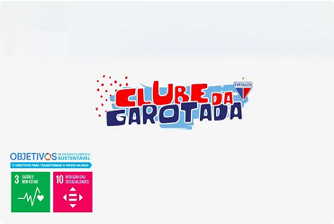
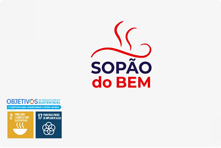
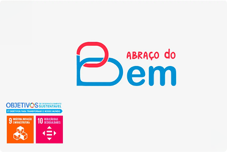
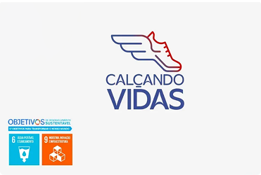
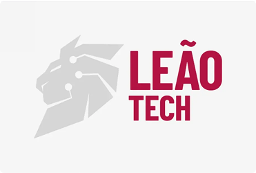
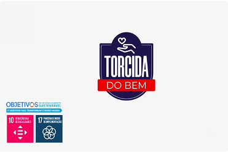

PROJETOS
Veja como DOAÇÃO se transforma em uma corrente do BEM!






VEM CONHECER O MERCADO DA TECNOLOGIA COM O LEÃO TECH!
Aproveite a oportunidade! Destaque-se no projeto e entre para o mercado da tecnologia.
Uma associação que desenvolve ações sociais perenes, coordenadas e realiza as atividades de responsabilidade social do Fortaleza Esporte Clube, através de termos de parceria firmado entre as instituições.
Formada, até o presente momento, por mais de 288 voluntários e 78 ‘’Amigos do Bem’’ sendo pessoas que têm a consciência do alcance, da transformação social realizada pelo Fortaleza Esporte Clube e movidas pela vontade de fazer o BEM.
Uma manhã de muita interação, na comunidade do Barroso. O encontro incluiu palestras de violência contra a mulher, serviços de beleza, lanches, brincadeiras e a presença dos nossos mascotes.
Evento realizado no I PREDE, no qual reuniu um grande público para acompanhar a palestra de Jade Romero, sobre a importância da mulher. Com a presença do CEO Marcelo Paz, as mamães aproveitaram um dia de beleza, com maquiadoras, massagistas, em um momento de grande descontração.
Em sua primeira edição, o Jantar do Bem reuniu 250 convidados no Coco Bambu, com grandes personalidades de nossa cidade, para apresentar os novos projetos da Associação, com boa musicalidade, humor, leilão social e uma ótima experiência gastronômica.
Torneio Sub 11 realizado no Ginásio Paulo Sarasate, que reuniu 16 projetos, que tiveram a oportunidade de serem avaliados pelos profissionais de base do Fortaleza. Além de gerar uma grande oportunidade para os atletas, juntamente com lanche e uniforme, a Taça Leão Social classificou atletas para a Copa Unindo Valores.
O Fortaleza foi convidado pela Fundação Athletico Paranaense, a disputar um torneio exclusivo para projetos sociais, em Curitiba. Através do Bem Tricolor, a nossa equipe foi selecionada com atletas da Taça Leão Social, que tiveram a oportunidade de viajar, sem custos e disputar o torneio na Ligga Arena. O Fortaleza Bem Tricolor, foi vice-campeão da competição, em sua primeira participação.
O Bem Tricolor foi convidado pelo Jornalista Ronaldo Lima, a receber o Prêmio "EuFaçoaDiferença", na Arena Castelão, pelo seu belíssimo ano de 2024, como uma das principais instituições de impacto social, por meio do esporte, em nosso estado.
Evento anual realizado com o Fortaleza Esporte Clube, na Praça Ney Rebouças, onde as crianças têm um dia de diversão, em diversos brinquedos, lanches, pintura de rosto e muitas brincadeiras com a presença dos mascotes, Juba e Stella.
O Bem Tricolor teve a oportunidade de participar do Costume Saudável, a convite do São Luiz, no Riomar Fortaleza. Na ocasião, tivemos nosso Stand, com a venda de itens licenciados. Nosso CEO Marcelo Paz se fez presente nesse momento, contamos com nossos queridos mascotes e realizamos uma campanha de ativação, no qual foi sorteada uma camisa autografada, do Craque Moisés.
Veja como DOAÇÃO se transforma em uma corrente do BEM!